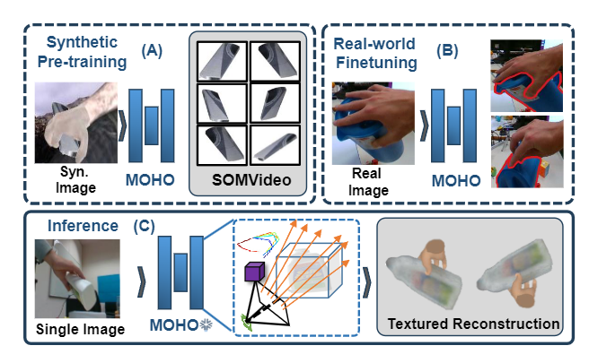
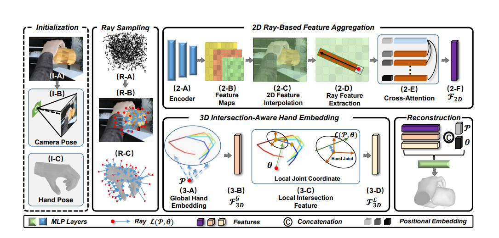
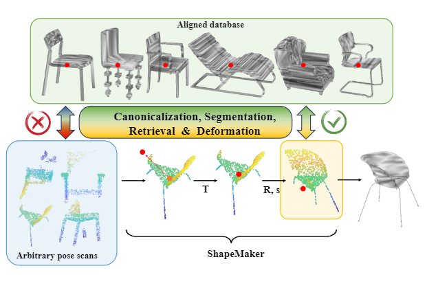
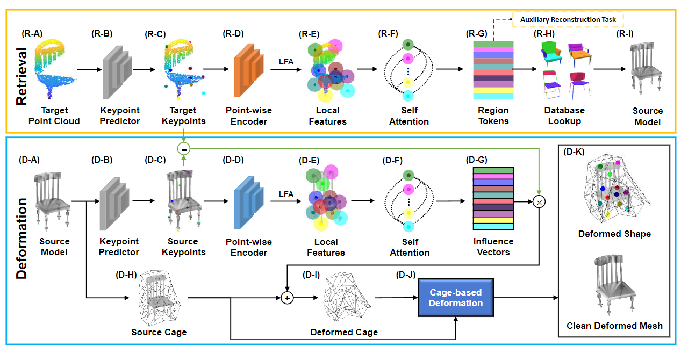
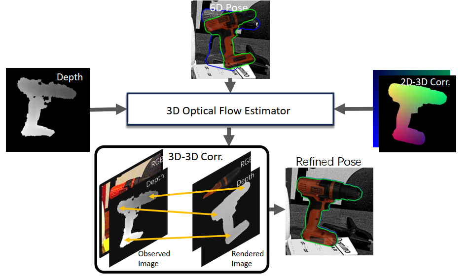

Chenyangguang (Cyrus) Zhang (张晨阳光)
Master student at Department of Automation, Tsinghua University
Incoming PhD student at CVG, ETH Zurich
Email: zcyg22@mails.tsinghua.edu.cn
Google Scholar • GitHub• LinkedIn|
|
Chenyangguang (Cyrus) Zhang (张晨阳光) Master student at Department of Automation, Tsinghua University Incoming PhD student at CVG, ETH Zurich Email: zcyg22@mails.tsinghua.edu.cn Google Scholar • GitHub• LinkedIn |
|
I am a final year Master student at BBNC Lab, Department of Automation, Tsinghua University, supervised by Prof. Dr. Xiangyang Ji.
I got my bachelor's degree also from Department of Automation, Tsinghua University.
I'm a incoming PhD student at CVG, ETH Zurich, supervised by Prof. Dr. Marc Pollefeys.
|
News
|
Theme 1: Reconstructing and Understanding Human-Scene Interaction |
|
|
Open-Vocabulary Functional 3D Scene Graphs for Real-World Indoor Spaces |
 |
MOHO: Learning Single-view Hand-held Object Reconstruction with Multi-view Occlusion-Aware Supervision |
 |
DDF-HO: Hand-Held Object Reconstruction via Conditional Directed Distance Field |
|
Theme 2: Object-Centric Indoor Scene Reconstruction |
|
 |
ShapeMatcher: Self-Supervised Joint Shape Canonicalization, Segmentation, Retrieval and Deformation |
 |
KP-RED: Exploiting Semantic Keypoints for Joint 3D Shape Retrieval and Deformation |
|
U-RED: Unsupervised 3D Shape Retrieval and Deformation for Partial Point Clouds |
|
Theme 3: MVS and Pose Estimation |
|
|
SST: Real-time End-to-end Monocular 3D Reconstruction via Sparse Spatial-Temporal Guidance |
|
GDRNPP: A Geometry-guided and Fully Learning-based Object Pose Estimator |
 |
GPose2023: A Modularized Learning-based Object Pose Estimator |
Work Experiences and Interships
Honors and Awards
Miscellaneous
I love sports. I enjoy playing soccer⚽ and badminton🏸, etc. and serve as a winger of soccer team of DA, THU. I'm a soccer fans of Man. Utd. and José Mourinho.
I'm also interested in writing novels and poems. Some of my works are published on Chinese literary magazines. My Wechat official account is named "了妄", where I share some literary works I wrote.
I'm a guitar player admiring Tommy Emmanuel and Kotaro Oshio. Meanwhile, I'm a figure skating fans of Yuzuru Hanyu.
Feel free to get in touch!